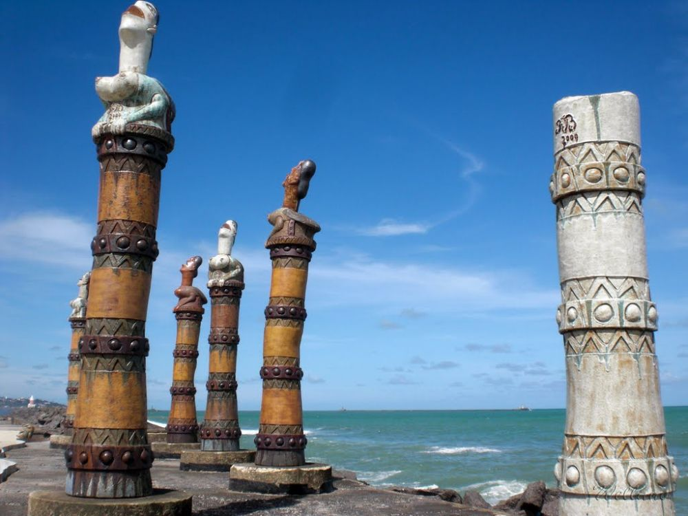
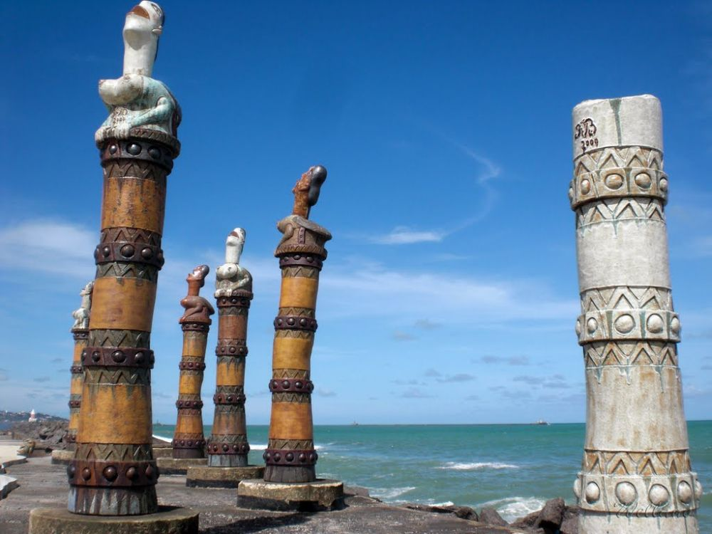

Igreja Madre de Deus
Não tem como andar pelas Ruas do recife Antigo e não reparar na Igreja Madre de Deus. Construída em 1709, a Igreja é uma das mais bonitas e concorridas para casamentos em Recife. Se você tiver a sorte de passar por ela aberta, vale a pena a visita. É lindona!

Parque das Esculturas Francisco Brennand
Aproveite que você está na praça Praça do Marco Zero e atravesse em barquinho rumo ao Parque das Esculturas Francisco Brennand. O parque foi construído em 2000 e conta com 90 esculturas do artista pernambucano Francisco Brennand, sendo a Coluna de Cristal, com 32 metros de altura, a principal obra no complexo. O trajeto dura uns 2 minutinhos e a travessia custa R$ 7,00 ida e volta. Em menos de 1 hora você visita a exposição a céu aberto e segue o seu roteiro pelo Recife Antigo.
 
